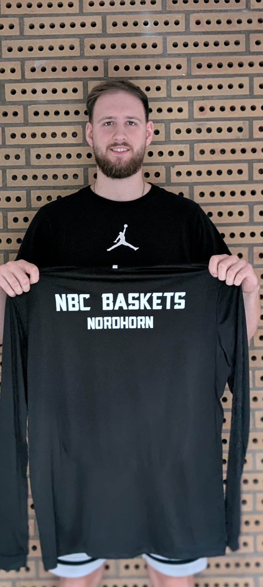

Eine weitere wichtige Personalie bei den NBC Baskets Nordhorn ist geklärt: Kapitän Maxim Müller wird auch in der kommenden Saison das Trikot des NBC tragen.
Starkes Signal für das Projekt
Nach den beiden hochkarätigen Neuzugängen setzt der Verbleib des Topscorers der vergangenen Saison ein weiteres starkes Zeichen. Bereits in der Landesliga-Saison vor zwei Jahren gehörte der 2,00-Meter-Forward zu den absoluten Leistungsträgern des Teams. Entsprechend groß war das Interesse anderer Vereine.
Umso mehr freut sich der NBC, dass sich Maxim bewusst für den gemeinsamen Weg und das ehrgeizige Projekt in Nordhorn entschieden hat.
Zentrale Säule der Mannschaft
Mit seiner Qualität, Erfahrung und Führungsstärke wird Maxim auch in der kommenden Saison eine zentrale Säule der Mannschaft sein. Als Captain soll er auf und neben dem Feld Verantwortung übernehmen und eine wichtige Rolle dabei spielen, die hoch gesteckten Ziele des Vereins zu erreichen.
Olliges freut sich über den Verbleib
Trainer Patrick Olliges freut sich besonders über den Verbleib seines Kapitäns: „Maxim ist für uns sportlich wie menschlich unglaublich wertvoll. Ich glaube, dass ihn die aktuelle Situation mit unserem neuen Trainerteam und den gestiegenen Ansprüchen noch einmal auf das nächste Level bringen wird. Er hat enormes Potenzial und ich freue mich darauf zu sehen, welche Entwicklung er in dieser Saison nehmen wird.“
Willkommen zurück, Captain!
Die NBC Baskets freuen sich, dass Maxim Müller den Weg in Nordhorn weiter mitgeht.